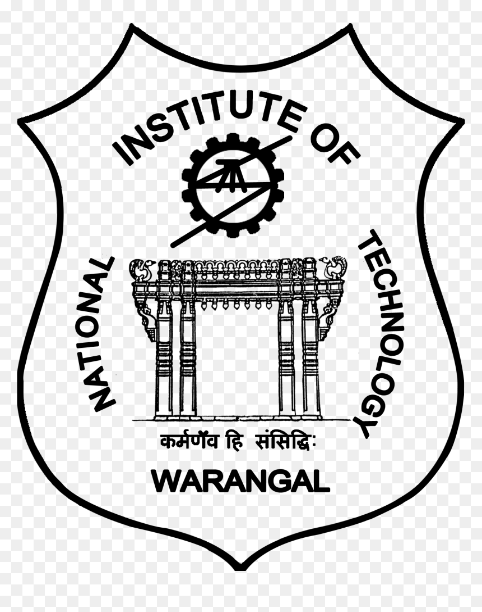
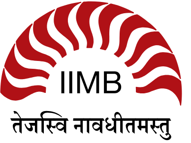
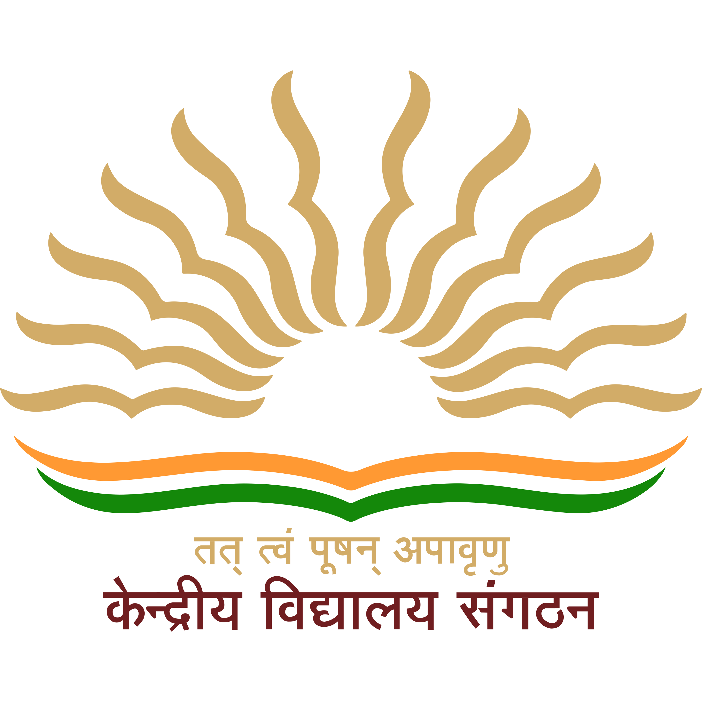

B.Sc.-B.Ed. (Mathematics with Computer Science) | NIT WarangalAn Integrated Teacher Education Program designed to cultivate leaders in education with deep expertise in Mathematics and a minor specialization in Computer Science. This rigorous curriculum bridges pure mathematical theory with an algorithmic problem-solving approach at one of India's most premier technical institutes. (Expected to complete in 2029)

BBA in Digital Business and Entrepreneurship | IIM BangaloreA forward-looking undergraduate program from a top-tier management institute, focusing directly on the intersection of modern technology and business strategy. It builds a robust foundation in financial modeling, digital marketing, and startup frameworks, perfectly equipping me to launch and scale innovative educational platforms.

Intermediate & Matriculation | Kendriya Vidyalaya AFS, LucknowBuilt a strong academic foundation with a focus on discipline and scientific curiosity at Kendriya Vidyalaya AFS, Bakshi Ka Talab.